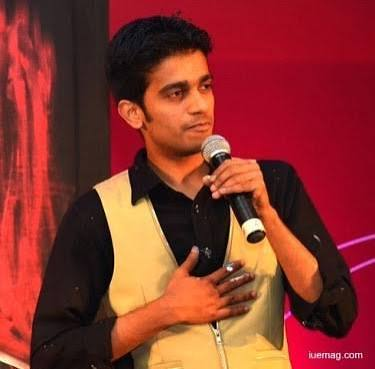

The journey of Vilas Nayak is a story of passion, dedication, and continuous improvement. His sketches have been appreciated by art enthusiasts and clients alike. Exhibitions and successful portrait projects have established him as a talented sketch artist whose work inspires many aspiring artists.
⬅ Previous 🏠 Home